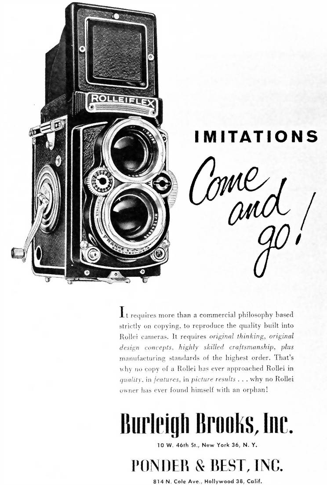

Promotion Details
The first prototype of the new camera, named the Rolleiflex, was finally completed in 1927; it was built for absolute reliability and featured a rigid, injection-moulded housing made of aluminium. Heidecke wanted to avoid conventional leather bellows for focusing the lens because of an earlier, bad experience: around 1916, he conducted an experiment with a Kodak camera; he left it in a cellar, and when he later retrieved it, he found that rats had eaten the bellows. This convinced him that a camera designed for photojournalism and operation in the tropics had to work perfectly, which excluded components that might rot. He ruled out a cloth shutter curtain for the same reason, choosing instead a Compur mechanical shutter.
Focusing in the "Rolleiflex" was achieved by moving the carriage that held both the viewfinder and the imaging lens, i.e. the camera had so-called "metallic bellows"; that is, the plate enclosed the sides of the case. It was crucial that the plate remained parallel as it moved during focusing; to achieve this, Heidecke developed an ingenious design which proved to be highly successful. Behind the imaging lens and surrounding the opening for the optical path was a large cogwheel which drove four smaller cogs located top left and right, and bottom left and right. Each of the four small cogs drove rack and pinions (toothed rails) attached to the lens assembly. This system functioned perfectly, and, thanks to high-quality components, also for many years of service. Only the viewfinder and back of the camera, both made of aluminium, had to be handled with care, which remained the case until the camera went into production.
One more prototype was produced in 1928, and then the big moment finally arrived: on August 10, the first camera went into series production. Altogether, 14 units were made that year. Then, at 11am on Monday, 11 December, selected journalists were invited to a press conference in the festively decorated production area. Paul Franke put together press packs for the occasion, which led one magazine to publish a test report without ever actually handling the camera. Although Franke had forgotten to prepare sample photographs to distribute to the press, he neatly avoided this oversight by distributing empty, labelled cartons around the building, just for show.